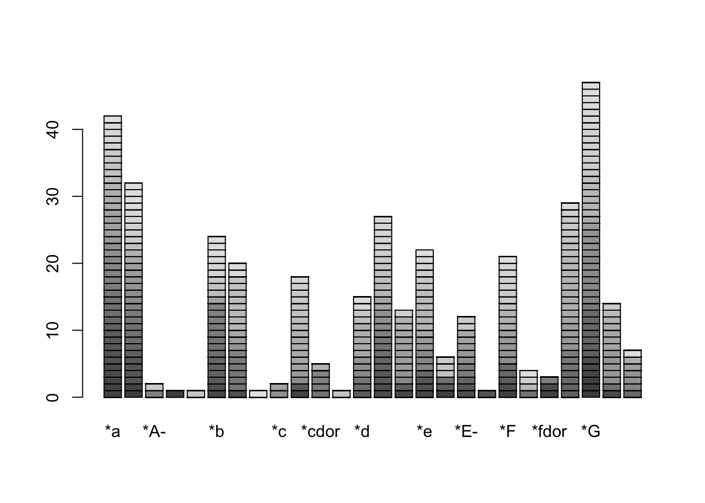
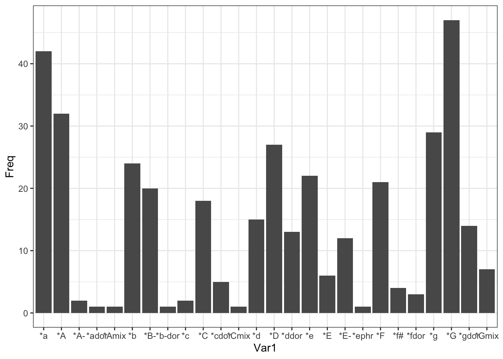
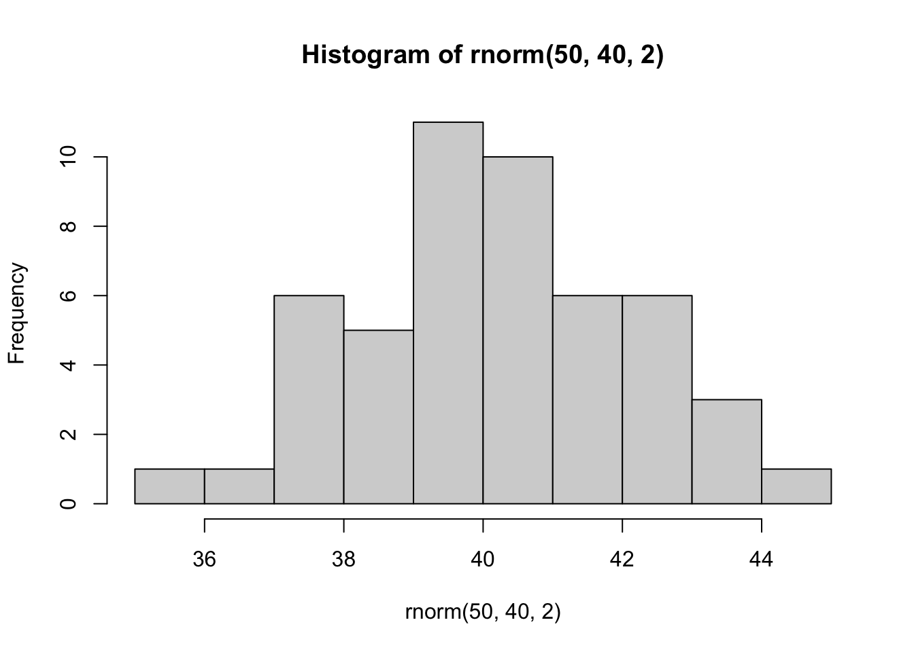
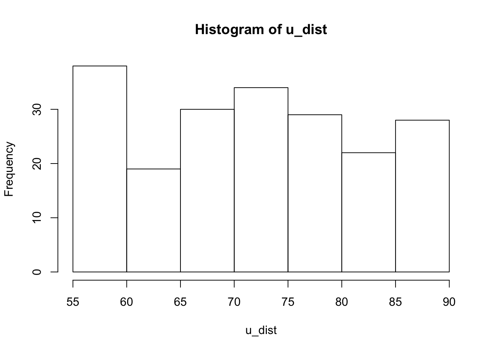
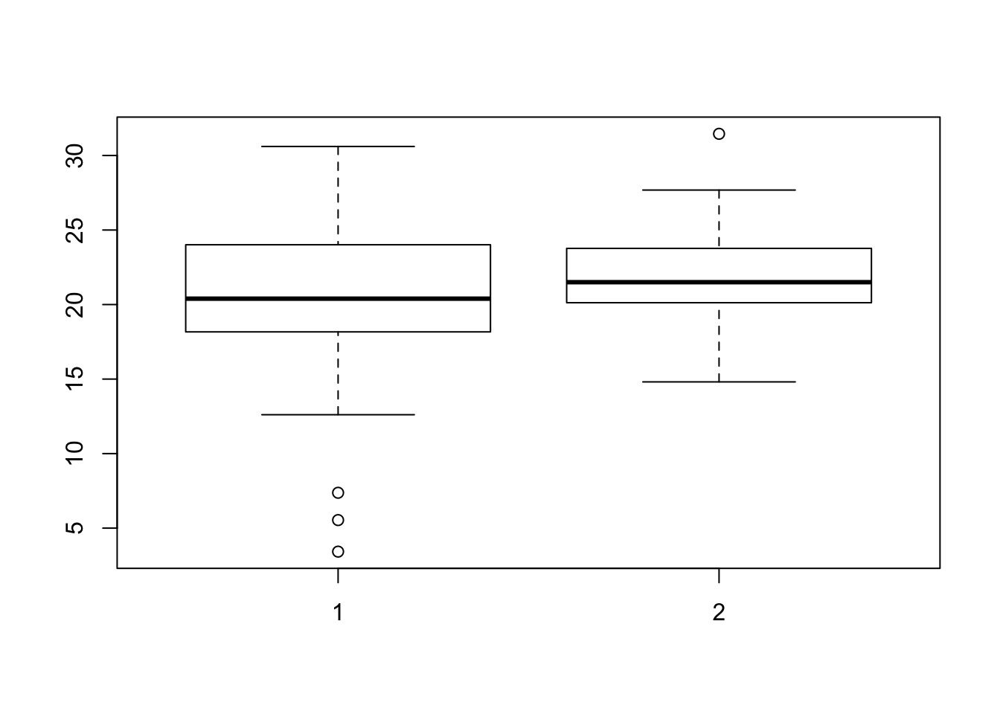

The field of statistics can be broadly divided into two area: descriptive statistics and inferential statistics. As might be expected, descriptive statistics is intended to describe some properties of some set of data. For example, we might calculate that the average pitch in Western music is D4 (the D immediately above middle C). The goal of descriptive statistics is to characterize something.
Variables
Variable: An observable property of an object or phenomenon that can take on different values. Examples of variables include length and weight. Musical examples include pitch height, duration, year of composition, and ensemble size.
Continuous variable: A variable that can take on an infinite number of values. Frequency is an example of a continuous variable.
Discrete variable: A variable that takes on a limited number of possible values (such as gender), or is “binned” (like height in feet and inches). For example, when pitch is measured in terms of scale tones it is a discrete variable. When pitch glides are measured in cents, the variable is continuous.
Independent variable: A variable that is manipulated by the experimenter.
Dependent variable: A variable not under the experimenter’s control that is measured.
Statistics
Descriptive statistics: Measures that describe a set of data.
Statistic: Some value derived from a sample, such as the sample average or mean.
Inferential statistics: The process by which population parameters are inferred from sample statistics.
Parameter: A true population value, such as the population mean (μ).
Variable-statistic-parameter: We infer a population parameter on the basis of a statistic which we calculate from measured variables.
Distributions
Bar graph: A graph that uses a nominal scale on the X (horizontal) axis. (That is, a frequency-of-occurrence graph that distinguishes discrete categories, such as gender, or instrument played.) In a bar graph, bars are separated by spaces in order to emphasize that neighboring bars are not contiguous cateogires.
### setting a working directorysetwd(".")### importing your datadf <-read.csv("data/chorale_keys.csv", header=F)### cleaning up your datadf$keys <- df$V2df$V2 <-NULLbarplot(table(df))

We could clean it up a bit.
### getting counts of keyskeys <-as.data.frame(table(df$keys))###plotting it as a barplot.ggplot(data=keys, aes(x=Var1, y=Freq)) +geom_bar(stat="identity") +theme(axis.text.x =element_text(angle =90)) +theme_bw()

Histogram: A frequency-of-occurrence graph that uses an ordinal, interval, or ratio scale on the X (horizontal) axis. (In other words, a graph that does not use a nominal scale.) In a histogram, bars are not separated by spaces in order to emphasize that neighboring bars represent contiguous categories.
Here is a histogram of a random normal distribution of numbers, binning the numbers.
hist(rnorm(50, 40,2))

Cumulative Distribution: A distribution (graph) that plots cumulative frequencies for successive bins on the X axis.
Back-to-back Histograms: Histogram-pairs that are plotted back-to-back, such as the gender/age histograms commonly used to plot population demographics.
Kurtosis: The degree to which a distribution is either flat or peaked. A relatively flat distribution is called platykurtic. A highly peaked distribution is said to be leptokurtic. A distribution that is neither flat nor especially peaked is deemed mesokurtic.
Kurtosis can be described for both continuous distributions and discrete distributions. The discrete distributions below illustrate platykurtic (below)
u_dist <-runif(200, 55, 89)hist(u_dist)

and leptokurtic (right) kurtosis (skinny with tall peaks).
Symmetry: The property of a distribution that exists when the distribution has the same shape on either side of the center.
Modality: The number of major peaks in a distribution. Where a distribution has only a single peak it is said to be unimodal. Where a distribution has two peaks it is said to be bimodal.
Unimodel: A distribution containing a single peak.
Bimodal: A distribution containing two peaks. Again, bimodal distributions may be continuous (upper illustration) or discrete (lower illustration).
Distribution Descriptors: Distributions can be generally described according to three properties: skewness, kurtosis, and modality (unimodal, bimodal, etc.).
Central Tendency
It is often useful to be able to summarize a distribution. Suppose someone is thinking of moving to Columbus, and asks How much does it cost to rent an apartment in Columbus? We could respond by giving them a list of all apartments in the city and their associated rents. That is, we could present them with a complete distribution. However, this would be too much information. The questioner is hoping we will give them a more general answer. An example of a summary generalization is the average (what statisticians called the mean). The average rent is likely to convey the gist of what the person wants to know.
The average or mean is just one example of a measure of ‘middleness’ or ‘centrality’ in a distribution. In statistics, these are referred to as measures of central tendency. There are three classic measures of central tendency: mode, median, and mean. The mode is simply the most frequentlly occurring score or value in a distribution. For bimodal distributions, we report the mode for both peaks.
The median is the middle-most score—that is, half the values are above the median, and half the values are below the median. The mean is the average score, which is the sum of all values, divided by the number of values.
By way of example, for the values: 1, 2, 2, 5, 10, 20, 30 — the mode is 2 (2 is the most common value), the median is 5 (3 values above and 3 below), and the mean (or average) is 10.
In statistics, it is useful to distinguish the mean (average) of the sample, from the mean of the population. The sample mean is represented mathematically by the letter x with a bar drawn above (x̄ - spoken “X-bar”). By contrast, the population mean is represented by the Greek letter mu (μ).
Each measure of central tendency (mean, median and mode) has unique advantages and disadvantages. The principal advantage of the mode is that it conveys a “typical” or “common” value. Another advantage of the mode is that it can be calculated for nominal data. For example, a distribution might convey the number of performers playing various instruments. We cannot calculate an “average instrument,” nor can we determine the “median instrument.” However, we can identify the “modal instrument”—it is simply the most commonly played instrument. A problem with the mode is that it may be quite far away from the majority of values in some data set. Another disadvantage of the mode is that for continuous data, no two values may be equivalent. In these cases, the mode is undefined.
The mean is an admirable measure of central tendency that has a number of advantages—the most important of which we’ll discuss shortly. However, the mean also has some problems. First, the mean is especially influenced by extreme scores. The average of the values 1, 1, 1, 1, 1, 100 is 17.5—which is quite far away from the majority of the values in the set. This effect is commonly observed when calculating average house prices. Most house prices are moderate. However, occasionally someone sells a multimillion-dollar mansion. So the average cost of a house in a given city is apt to fluctuate wildly from month-to-month, depending on whether any mansions were sold. (This is the reason why real estate professionals report the median house price, not the average house price.) A second problem with means is that the value may not actually exist in the data. Both the median and mode report a value that is present in the data set. For example, we may find that the average symphony orchestra performance involves 53.7 musicians. Of course, no actually performance finds .7 of a musician on stage. Finally, the mean can be calculated only for interval and ratio scales. We cannot calculate an average for ordinal scales.
If we want to calculate central tendency for ordinal data, then it is appropriate to calculate the median. This is an important advantage for using the median. In addition, the sum of deviations for all data is least for the median; no other point has less cumulative deviation to all data points.
The principal advantage of the mean is rather technical. Apart from central tendency, another consideration in summarizing a distribution is the variability or dispersion of the data. It turns out that the mean has a special mathematical relationship to the best measure of data variability. Statisticians have demonstrated that squared deviation is a much better measure of ‘goodness’ than the unsquared deviation (see below). It turns out that the sum of squares for deviation for all data is least for the mean; no other point has less cumulative squared deviation to all data points. This means that the mean has a favorable relationship with the standard deviation (see below). The mean and standard deviation make an excellent mathematical pair.
Fortunately, for many distributions, the mode, median, and mean values are very similar. In fact, for data that is normally distributed, the mode, median and mean values are equivalent. Much (though not all) data in the world is normally distributed.
Variability
Apart from characterizing central tendency, it is often help to characterize the variability or dispersion present in a set of data. At least six measures of variability have been distinguished: (1) range, (2) interquartile range, (3) average deviation (not used), (4) mean absolute deviation (m.a.d.) (rarely used), (5) variance, and (6) standard deviation.
Range: The distance between the highest and lowest data values. For example, for a musical work we might characterize the range between the highest and lowest pitches, or between the shortest and longest notes. There are three common problems with using the range to characterize the variability or dispersion of some data: First, the range is susceptible to outliers—extreme data points that often arise for spurious reasons (such as a glitch in some measuring equipment). Secondly, the range depends on sample size: the larger the sample size, the greater the tendency for the range to increase—even though the distribution changes very little. Thirdly, since the range typically involves just two data points, the range ignores most of the data.
Interquartile range: The range after discarding the upper and lower quartiles (25%). Problems with interquartile range: (1) discards too much of the data—for many purposes we want to know which of two distributions has the greater variability.
Average Deviation: The mean of the (signed) deviations from the mean: Σ(x - x̄)/N. This is a useless statistic; better to use the mean absolute deviation (m.a.d.).
Mean Absolute Deviation (m.a.d.): The mean of the deviations from the mean: Σ(| x - x̄ |)/N. This statistic is rarely used.
Variance: The average of the sum of the squared deviations. We normally distinguish the sample variance (s2) from the population variance (σ2).
s2 = σ (x - x̄)2 / N - 1
Sample Variance: The variance of the sample (s2). When calculating the variance of the sample, we must divide by N-1 rather than N.
Population Variance: The variance of the population (σ2). When calculating the variance of the population, we must divide by N rather than N-1.
Standard Deviation: The square root of the variance. Specifically, the square root of the average of the sum of the squared deviations. The standard deviation is sometimes preferred over the variance because it is in the original units rather than units-squared. We normally distinguish the sample standard deviation (s) from the population standard deviation (σ).
s2 = &squareroot; σ (x - x̄)2 / N - 1
Sample Standard Deviation: The standard deviation of the sample (s). When calculating the standard deviation of the sample, we must divide by N-1 rather than N.
Population Standard Deviation: The standard deviation of the population (small sigma). When calculating the standard deviation of the population, we must divide by N rather than N-1.
Calculating Variance without knowing the mean: A useful formula for calculating the variance without knowing the mean is: s-squared equals ((Σ Sigma X-squared) minus ((Sigma X)squared divided by N) all divided by N - 1 [or N for the population variance]
Variance and Outliers: The variance and standard deviation are very sensitive to extreme scores. It is important to keep in mind that outliers will have a significant effect on the variance.
Coefficient of Variation: The coefficient of variation (CV) is defined as the standard deviation divided by the mean. The coefficient of variation provides a useful way of comparing the standard deviations for distributions that have different means. The coefficient of variation is restricted to interval and ratio data; it cannot be used for nominal and ordinal data.
Estimators: Statistics are valued primarily according to their ability to estimate the corresponding population parameters. For example, statisticians usually prefer the mean over other measures of central tendency primarily because it is a better estimator of central tendency in the population (in this case μ). That is, sample means cluster more closely around μ than do sample median cluster around the population median.
Boxplots
Boxplots: (Also known as box-and-whisker plots.) An exploratory data analysis (EDA) method developed by Tukey. A box is plotted whose edges coincide with the hinges. The median is plotted as a line dividing the box into two. From the edges of the box, two lines (whiskers) are drawn to the upper-most and lower-most values. If the extreme data points are considered outliers, they are plotted as individual points. In this case, the whiskers embrace only all of the adjacent data. Sometimes the average or mean is plotted using a plus sign (+).
x <-rnorm(40, 20, 5)y <-rnorm(45, 23, 3)boxplot(x,y)

Outlier: An extreme data point. In Tukey boxplots, outliers are defined as any data points lying outside the inner fences. Inner fences, in turn, are defined as points falling 1.5 times the H-spread above and below the hinges. The H-spread is the range between the medians for the lower and upper halves of the data set (i.e. the “hinges”).
A tip: It is often helpful to plot data in the order in which the data was collected. Normally, we would not expect the data to show any systematic trend with respect to time, and so such a plot can help to expose problems in data collection.
Quartiles: Those values that divide the data (distribution) into four quarters.
Deciles: Those values that divide the data (distribution) into ten tenths.
Quantiles: A generic name for equal divisions of a distribution—such as quartiles or deciles.
Linear Data Transformations: When a constant value “a” is added to all values in a data set, the following effects arise: The new mean is the old mean plus “a”; the variance and standard deviation remain the same.
When all values in a data set are multipled by a constant value “b”, the following effects arise: The new mean is the old mean times “b”; the new variance is the old variance times the square of the constant “b”; the new standard deviation is the old standard deviation times the constant “b”.
Deviation Scores: A common linear transformation is to subtract the mean from each data value so that the mean is centered at zero. The resulting data values are called deviation scores. The standard deviation and variance are not affect by this transformation.
Centering: The process of transforming data values so that they become deviation scores. This is achieved by subtracting the mean from each data value.
Standard Scores: The result when deviation scores are divided by the standard deviation. That is, where data values are transformed so that their mean is zero (see centering) and their standard deviation is 1.
Standardization: The process of transforming data values so that they become standard scores. This is achieved by subtracting the mean from each data value, and dividing by the standard deviation.
Normal Distribution
Normal distribution: A special unimodal symmetrical distribution in which the mean = median = mode. The equation for a normal distribution is as follows:
f(X) = ( 1/(σ × &squareroot;(2 × π)) ) × e^( -(X - μ)2 / 2 × σ2 )^ where π = 3.14159 and e = 2.7183
Normal Distribution Notation: Normal distributions can be characterized according to their means (μ) and variances (σ2, sigma-squared). The following notation is used: N(μ,σ2). For example, N(-2.5,18.3) represents a distribution whose mean is -2.5 and whose variance is 18.3.
Standard Normal Distribution: A standard normal distribution has a mean of zero and a variance of 1; i.e. N(0,1) in normal distribution notation. In order to transform a data set so that it has a standard normal distribution, we need to transform each value to the corresponding standard score. We do this by calculating z.
z = (X - μ) / σ
That is, each standard score is equal to the its original value, less the mean, all divided by the standard deviation.
Z Score: A Z score represents the number of standard deviations that X is above or below the mean. The Z score assumes that the original distribution is normal.
Chi-Square
Brahms’s Hemiolas
A common statistical tests is the chi-square test. This test takes its name from the Greek letter X (pronounced “Kye” — rhymes with “pie”), which is used to compare ratios of counts. It facilitates the determination of whether the number of occurrences of some feature in one data sample is significantly greater than or less than what would otherwise be expected.
By way of example, let us test the hypothesis that Brahms use lots of hemiolas. Notice, first of all that “lots of hemiolas” is ambiguous. If we count three hemiolas in a short piano work, is that a small or big number? In order to answer that question we need a comparison or sense of what is normal or expected. An appropriate approach is to compare the number of hemiolas in Brahms with the number of hemiolas in the music of his contemporaries.
So, to set up the test we need first to count (a) the number of hemiolas in a sample of Brahms’s music, and (b) the number of hemiolas in the comparison population — the number of hemiolas in a similar sized sample of music by other composers who were active at the same time. Let us suppose that the raw data looks like this:
Composers
Brahms
Various
Total
Observed
9
2.3
11.3
Expected
5.65
5.65
11.3
brahms <- (9-5.65)^2/11.3various <- (2.3/5.65)^2/11.3brahms + various
[1] 1.007807
Proportionally, hemiolas occurred in 1.8% of the data for Brahms (9 out of 500) but just 0.7% in the music by other composers (23 out of 5000). Is this difference within the range of what one might expect by chance? That is, is this difference statistically significant? A chi-square test will tell us.
Calculating Chi-Square
The test entails three parts. First, we draw our line in the sand. That is, we establish in advance of our test our confidence level. Let us use a conventional confidence level of 95 percent. This corresponds to a significance level of .05. Second, we calculate the value of chi-squared. This is done by subtracting the number of expected occurrences from the number of observed occurrences, squaring the result, and dividing it by the number of expected occurrences. Where O is the observed number of occurrences and E is the expected number, the formula is:
x^2 = ((Observed - Expected)^2/Expected)
The summation symbol means that we must perform the calculation for each expected element. There are two elements to the expectation: how many measures we expect to contain a hemiola, and how many measures we would expect not to contain a hemiola. If we would normally expect 23 hemiolas in 5000 measures of music of the period, then we would expect about 2.3 hemiolas in the 500 measures of Brahms’s music, i.e., that E1 = 2.3. At the same time, in our sample of various composers we observed that 4977 measures of music (out of 5000) did not contain a hemiola. If Brahms was like other composers, we would expect 497.7 of the 500 measures not to contain a hemiola. Accordingly, E2 = 497.7. The actual number of hemiolas encountered was in his music was 9, and the actual number of non-hemiolas measures was 491.
Now we need to determine whether our chi-squared value is statistically significant. Recall that our confidence level is 95 percent—and that this corresponds to a significance level of .05. We need to determine whether the chi-squared value is sufficient to achieve statistical significance at the .05 significance level. In order to answer this question, we will make use of a table of critical values for chi-square. Such tables have been pre-computed by statisticians, and are easily found in the appendices of any statistics book or on the web.
In order to determine the critical value for chi-square, we need to know the significance level (or confidence level) and the so-called degrees of freedom (abbreviated df). For this task, there is only a single degree of freedom. From the table below, we can see that for the 95% confidence level (=.05 significance level), with one degree of freedom, the critical value of chi-squared is 3.841. Our actual calculated value of chi-squared is 19.6. This means that our result is statistically significant. That is, the observations are not consistent with the null hypothesis; instead, they are consistent with our research hypothesis.